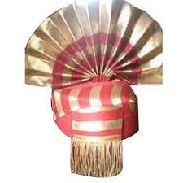

TAMIL NADU PAGRI
"Tamil Nadu Pagri" is a traditional headgear worn by men in Tamil Nadu, a state located in the southern part of India. It is a type of turban that is made by wrapping a long cloth around the head in a specific way, and it is often adorned with decorative accessories such as feathers or jewels. The Pagri is an important part of Tamil Nadu's cultural heritage and is commonly worn on special occasions or religious ceremonies..
